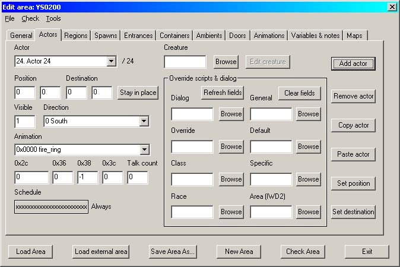
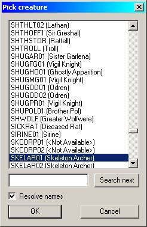
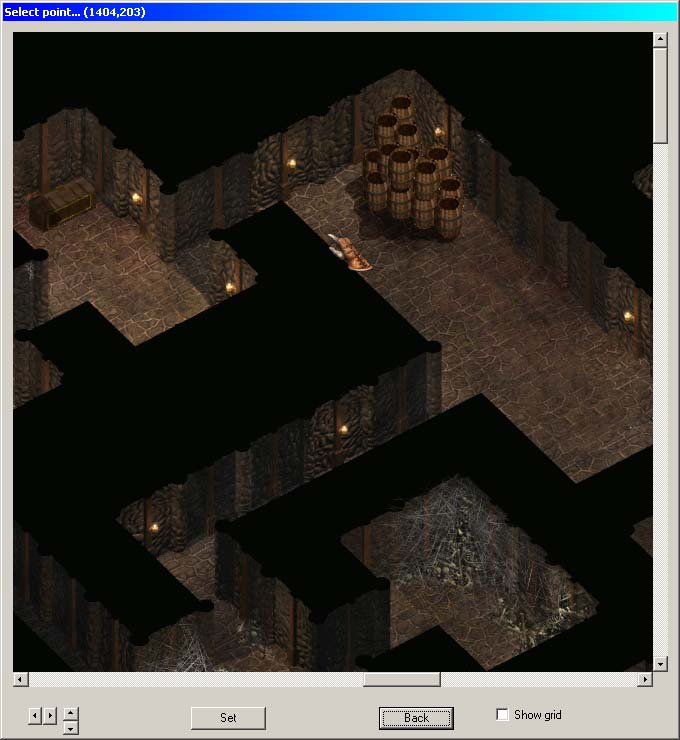
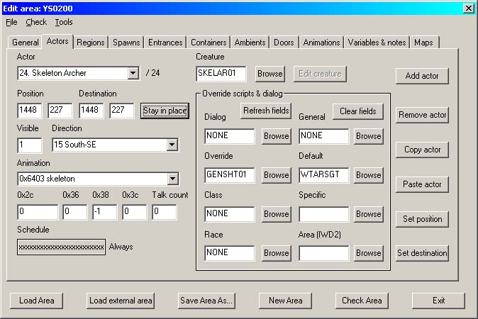
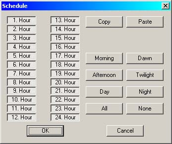
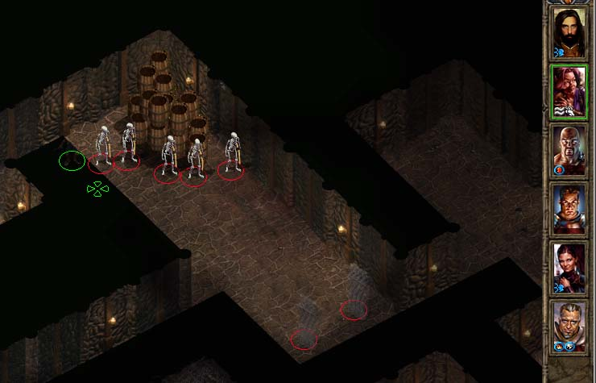
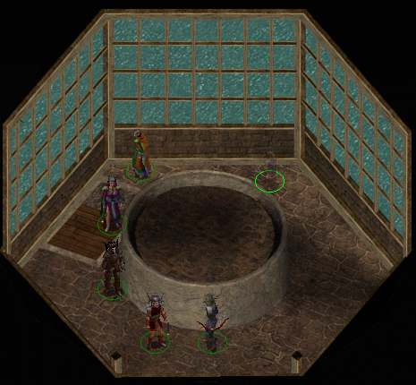
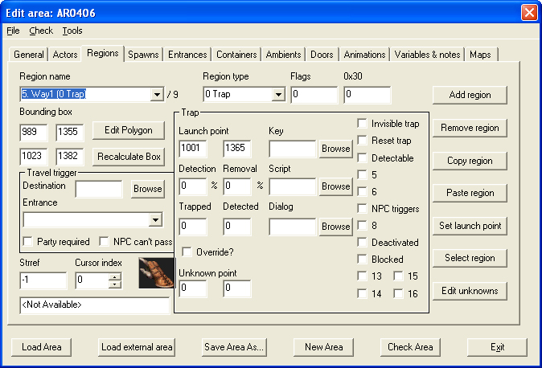

| Version History |
| Introduction |
| Adding Actors |
| Scripting Movement |
Version History
1.0 Initial release 1.1 Image 7/No actor paragraph added 1.2 Scripting Movement added 1.3 'Useful Baddies' listing added
Introduction
This tutorial will teach you how to place actors into your area. In general, actors - whether monster or humanoid - are placed to make an area "come alive". This may involve hacking your way through a narrow dungeon full of undead or it may be the inhabitants of a tavern creating the atmosphere of the place. All actors, of whatever type, are .cre files so there is no reason why you cannot create and add your own. Initially this tutorial was also to include spawnpoints, but to quote Avenger from the DLTC boards:
"...it is sparsely used in the original games. The spawnpoint implementation is screwed anyway".
If it gets fixed, you'll find it here!
In my opinion, NPCs and other characters that you interact with are better being placed by script, as this gives you much finer control over when - and when not - they appear.
Like the other tutorials, this one is set in my seatown somewhere on the Sword Coast.
I have no idea where you will be creating your mod, so I am going to assume that all of the relevant files are in your \bg2\override directory.
Unless you've changed your browser fonts to something weird and wonderful, the conventions in this tutorial are that blue is action and black is descriptive.
Start DLTCEP if it's not already running.
|
 Image 1 - the blank Actors tab |
Yes, I've been quite busy adding actors into this area :)). It is an abandoned dwarven hall below my seatown - abandoned, that is, by the living - but it is still heavily defended by the dead. In a case like this, think about your actors. If you simply add a group that consists solely of one type of actor (say, zombies), it won't take long for the player to figure out tactics to defeat them. I'm going to create an ambush that consists of spectres and skeleton archers; the archers will be a nuisance from a distance while the spectres will close in to fight and level-drain the party. The player will be forced to divide his party to deal with the two threats.
We'll add the archers first.
Give the actor a meaningful name, such as Skeleton Archer (!). You have two choices for actually entering the cre file name.
|
 Image 2 - .cre Listing |
The alternative is to enter the name of the cre file directly - see the "List of Useful Baddies". (Please note that this listing only includes creatures that are normally classed as enemies). In both cases, once the cre file name is entered
This will check the cre file for the scripts that it runs and display them in the boxes, as well as listing the correct animation automatically. If a box is blank then there is no script for that slot. If all boxes are blank then you've spelt the cre name wrong :).
The next move is to place the archer within the area and to make him face the correct direction.
This will preview the area you are working with. In my case, I decided to hit the party from two sides at once, setting the archers well back from the entry point to the room. The corridor at the top left is exit-only.
|
 Image 3 - Setting the actor |
As this is an archer who needs to stay where he is to shoot,
to fix him to the spot. Finally, select the direction he is to face.
If you need an invisible creature,
|
 Image 4 - The finished Skeleton Archer |
The fast way to add a similar actor is to
Done. Almost.... You've just pasted the new actor right on top of the old one.
to adjust the position of the new actor
and finally
to stop him moving. Repeat as necessary!
Suppose though that your actor is a moving actor. Instead of fixing him in place by using the 'Stay in Place' button,
The last modification to the actor is to set the hours at which he can appear. My ambush can happen at any time, but you may want an actor only to appear during night hours (thief? hmmmm).
|
 Image 5 - The Scheduler |
You can either select a predefined period or individual hours. Remember that button DOWN is appearance.
when you're happy. The display on the front of the schedule button will change to illustrate when the actor is active - a nice touch.
I repeated the entire process again to add a spectre in the bottom corner of the room, then did a copy'n'paste to give him some support.
|
 Image 6 - Oops! - Time for a quick exit |
Finally, to add a little more uncertainty to the whole area, I created some ghouls and ghasts that wander the corridors. Clicking on a Destination that has more than one path to it means that the creature will take a random path, based on the vagaries of the Infinity Engine's pathfinding algorithm. Or maybe it will just end up hitting its head against the proverbial wall....
So you've done all this and your actor doesn't appear, but you can CLUAConsole() him/her/it in with no problems at all. Take a look at image 7 below.
|
 Image 7 - No actor |
The entire area is explored and you can see the whole of the pedestal, but there's a Tanar'ri missing from the pedestal. A Tanar'ri is a big animation but despite that, if you look again you can see traces of the Fog Of war across the pedestal. If there are any traces at all in the area that an animation covers then the Infinity Engine will not draw that animation. It's a real PITA, so watch out for it.
You would script an actor's movements if you wanted them to move along a predefined path for a predefined reason. An example of this is the barmaid in the Copper Coronet who walks around the outside of the bar, stopping at intervals and making a DSH comment. To create waypoints, I'd refer you to Tutorial 5 - Info Triggers for the information but to make life a little easier, this is a screenshot of one of the Copper Coronet waypoints.
|
 Image 8 - Copper Coronet Waypoint |
Though why the waypoints are set up as traps, I don't know. In the case of the barmaid, she starts her movement as soon as a party member comes into view and if she has not been turned red.
IF Detect([PC]) Allegiance(Myself,NEUTRAL) Global("quest1","LOCALS",0) THEN RESPONSE #100 MoveToObject("Way3") ActionOverride("DRUNK2",DisplayStringHead(Myself,4592)) MoveToObject("Way4") Wait(1) DisplayStringHead(Myself,4604) Wait(2) MoveToObject("Way3") Wait(1) DisplayStringHead(Myself,4611) Wait2 SetGlobal("quest1","LOCALS",1) END
The first response block shows an interesting little scripting trick in that the barmaid's script is being temporarily halted to force the drunk to display a DSH. At the end of this script section she is prevented from repeating it by the flag "quest1" being set to 1 and she goes into a series of random movements:
IF Detect([PC]) Allegiance(Myself,NEUTRAL) Global("quest1","LOCALS",1) THEN RESPONSE #10 Wait(1) MoveToObject("Way1") RESPONSE #10 Wait(2) MoveToObject("Way2") RESPONSE #10 Wait(1) MoveToObject("Way3") RESPONSE #10 Wait(2) MoveToObject("Way4") RESPONSE #10 Wait(1) MoveToObject("Way5") RESPONSE #1 Wait(1) MoveToObject("COPCUST3") DisplayStringHead(Myself,4590) Wait(2) END
As an aside, I suspect this is a 'broken' script in that the 'quest1' flag is not reset and so she never repeats the first block. Secondly, that 'RESPONSE #1' is not a misprint. I believe that there is a block missing:-
IF !Detect([PC]) Allegiance(Myself,NEUTRAL) Global("quest1","LOCALS",1) THEN RESPONSE #100 SetGlobal("quest1","LOCALS",0) END
This would reset the entire script so that next time a PC came into view, she would restart the entire script block and walk right round the Copper Coronet again, complete with all the DSH remarks. That really is all there is to scripting an actor's movements, bar one final trick. If you want to script multiple actors all following the same path - e.g. a guard patrol - you only need to give the squad leader the waypoint script. All of the others would get a simple 'follow me':
IF ActionListEmpty() !Range("[cre name]",4) THEN RESPONSE #100 FollowObjectFormation("[cre name]", x, y) END
By judicious use of the x,y co-ordinates you could set up a really smart marching squad or an equally sloppy bunch of bandits.
|
Tutorial written by Yovaneth, apprentic’d at Candlekeep during the Bhaalspawn Troubles. Post it where you will but please don’t take credit for what you have not written. |